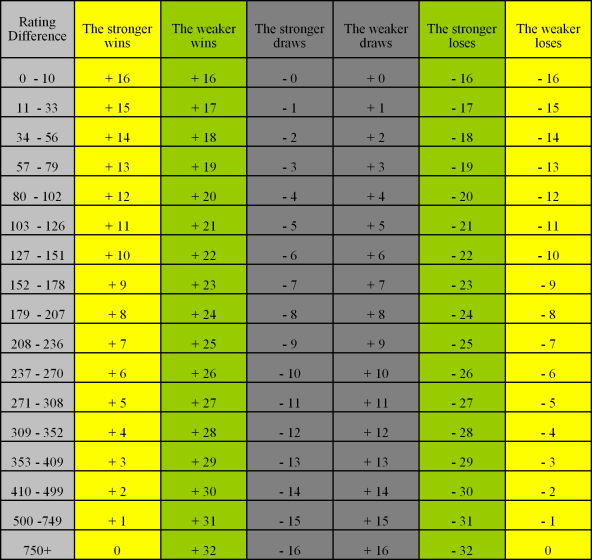

| NZCF# | Name | Membership | Standard | Blitz |
|---|---|---|---|---|
| Annear, Daniel | Adult | 1247*(8) | 1153*(10) | |
| Barber, Simon | Adult | 1358*(8) | 1301 | |
| Barber, Stephen | Adult | 1248*(4) | 1270 | |
| Bretherton, William | Junior | 1340*(1) | 1147*(7) | |
| Bright, Jack | Adult | -- | 1035*(3) | |
| Carr, Ian | Adult | 1367 | 1332 | |
| Carr, Jesse | Adult | 973*(5) | 1143 | |
| Cheong, Christan | Junior | |||
| Cole, James | Junior | 1175*(7) | 1208*(6) | |
| Cosgrove, Christian | Junior | 1361 | 1223*(5) | |
| Eldridge, Ben | Adult | 969*(1) | 1212*(6) | |
| Hansen, Joseph | Junior | 1023*(3) | 846*(11) | |
| Harris, Hector | Junior | 1067*(3) | 954 | |
| 6144 | Hockley, John (RIP) | Senior | 1298 | 1169 |
| Kessack, Wesley | Adult | 1744*(3) | 1553*(9) | |
| Kesseler, Tony | Senior | 1431 | 1254*(5) | |
| Lynch, Patrick | Adult | 1080*(6) | 1213 | |
| Munro, Jamie | Adult | 1751 | 1850 | |
| 3072 | Nijman, Arie (RIP) | Senior | 1786 | 1781 |
| Patel, Akash | Adult | 1899*(3) | 1743*(9) | |
| 5835 | Pearson, Brian | Senior / Life Member | 1523 | 1375 |
| Pugh, Ric | Adult | 1429*(7) | ||
| Rawls, Riley | Junior | Unrated | 1300*(1) | |
| Reti, Azaria | Junior | 1314*(1) | ||
| Reti, Paul | Senior | 1582*(3) | ||
| Severinsen, Dean | Adult | 1292 | 1169 | |
| Severinsen, Rhys | Adult | -- | -- | |
| Stevens, Gary | Adult | 958*(3) | 1062*(4) | |
| Steadman, Charles | Adult | 1695*(1) | 1570*(4) | |
| Steadman, Lewis | Junior | -- | 1318*(4) | |
| Steadman, Robbie | Junior | 1501*(3) | 1185*(5) | |
| 5681 | Stringer, Scott | Adult | 1768 | 1622 |
| 6019 | van den Bergh, Bob | Adult | 1701 | 1736 |
| Viskovic, Richard | Adult | 1425*(2) | ||
| Whitham, Stuart | Adult | 1558 | 1632 | |
| Williams, Mark | Adult | 1369 | 1334 | |
| Williams, Steph | Junior | 1145*(4) | 1017 | |
| Williams, Thomas | Junior | 1204*(3) | 1046 | |
| Young, Jamie | Junior | 1476*(3) | 1345*(5) |
Ratings
Definitions:
- * Denotes provisional rating (number if rated games in brackets)
- Standard - Games with a total time of 30 minutes/player or more (e.g untimed games).
- Blitz - Games with a total time limit of less than 30 minutes/player.
New Zealand Chess Federation (NZCF) Ratings
View the latest NZCF ratings on the NZCF website >> NZCF Ratings
Why does NCC have different ratings to NZCF?
Some players do not wish to compete in larger, nationally rated events, but like to keep tabs on their playing strength. With our internal ratings they can do just that.
The NZCF ratings appear several times a year. There can be a delay between games played and new ratings appearing.
We release a new rating list shortly after each event. Members can check out their new ratings online a day or two after the event for immediate gratification (or not!).
How do we rate our players?
Blitz Ratings
Blitz games are timed at less than 30 minutes per player per game.
If a player is unrated at Blitz, we use a simple formula to assign them a Provisional Blitz rating. Provisional Blitz ratings persist until 12 games have been completed against fully rated opponents.
After these 12 rated games have been completed, a provisional rating loses it's provisional status and becomes a full NCC Blitz rating.
The formula we use to calculate provisional ratings is:

Players competing against Unrated or Provisionally rated players do not have their rating adjusted. The game is considered "unrated" as far as they are concerned.
If a player has a NZCF Rapid rating, we will use that as their NCC Blitz rating.
Players with full NCC Blitz ratings have their rating adjusted using the Swedish rating system, where the difference in rating between two fully rated players and the result dictate how many rating points a player gains or loses for each game rated.
This table shows how full NCC Blitz ratings are recalculated after each game:
Standard Ratings
Standard games are played at 30 minutes or more per player per game.
NCC Standard ratings are calculated using the USCF rating system.
If a player has no Standard rating, we use the same formula as detailed above in the Blitz section to calculate a players Provisional Standard rating.
Provisional Standard ratings are calculated differently from full Standard ratings to allow a "normalization" of the rating, which occurs after several games.
If a player has a NZCF standard rating, we will use that as their Provisional Standard rating and credit 6 games towards a full standard rating.
Full Standard ratings are adjusted by calculating the win/loss probability (based on the difference between the players' ratings) vs. actual result.
Rating Floors
At no time can any player's rating descend below 500 points. This is considered the absolute minimum rating a player may have if they are able to competently play the game of chess.